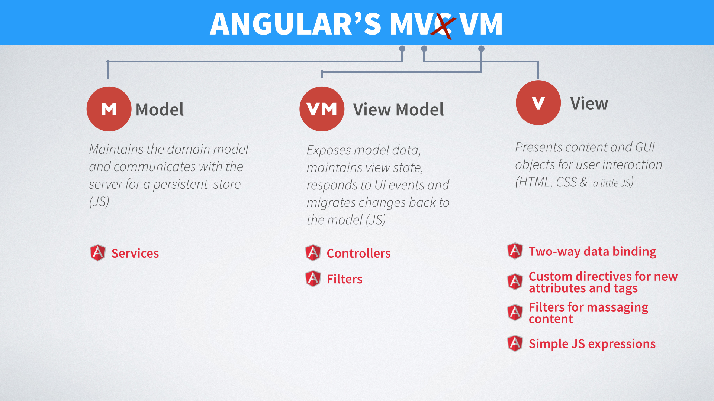

This lesson provides a general introduction to Angular and then focuses on templating and data binding. You will also configure your development environment. Although Angular is a JavaScript framework, in this lesson you won't create any JavaScript files, instead focusing on how you can use Angular's built in directives and filters in HTML templates.
Take a look at the following code block. This represents just about the most basic Angular application that you could write, but it serves to illustrate a very cool feature of AngularJS called 2 Way Data Binding.
<!doctype html>
<html lang="en" ng-app="">
<head>
<meta charset="UTF-8">
<title>{{ greeting }} World</title>
</head>
<body>
<p>Enter a word you'd like to say to the world: <input type="text" ng-model="greeting" ng-init="greeting='Hello'"></p>
<p>{{ greeting }} world!</p>
<script src="lib/angular.js"></script>
</body>
</html>
This code exists in the file 'projects/test.html'. Load it into your browser and see what it does when you change the default 'Hello' text in the input field.
MVC or Model View Controller is a software design pattern for partitioning and organizing code for complex, interactive programs. The model deals with the business of logic and data. It is the source of "truth" in the application. The view is a visual output that users can interact with, representing all or part of the model. Finally, the controller links the view to the model. A controller can update the model in response to user actions, as well as the view to alter the visual representation of the model. For this reason the controller is sometimes called a “View-Model” making the acronym MVVM instead of MVC.
Let's take a high level look at Angular as a client side MVC (or MVVM) framework. This will provide you with a mental model to conceptualize Angular (which has a lot of components and moving parts), and will allow you to speak intelligently with other developers who may or may not be familiar with Angular about its purpose.
The primary benefits for using the MVC Pattern include:
New client-side libraries (BackboneJS) and frameworks (AngularJS and EmberJS) were developed to meet the demands of larger and more complex code bases on the front-end. They are also starting to redefine the roles of client and server in a similar way to how smartphone and tablet apps have divided their workloads. Clients do a majority of the work locally in response to user interactions. The server becomes the persistent store of (potentially shared) data that can be accessed from a variety of different clients.
This new structure is referred to as a Single Page Application (or SPA). Once the application is downloaded to the browser, it makes RESTful data requests in the background to the server (unbeknownst to the user), so the browser can handle user interactions, instead of handling the whole load. Angular has been craftier to make this new structure far easier for web developers to implement.
As said at the beginning of this reading, MVC(-like) patterns divide application code into three distinct parts and associated roles and responsibilities:
Building web apps using the Angular MVVM Pattern requires developers to partition their work into the appropriate bins. Most of the time placing a function into the correct bin is pretty obvious. In some cases, placement is a judgment call. What follows are some general guidelines to use:
Defined using: HTML (w/CSS for styling and animation), a little JavaScript, Angular Directives for tags and attributes and two-way bindings.
Should include:
Defined using: JavaScript, Angular Services
Should include:
Defined using: JavaScript, Angular Controllers and Filters
Should include:
Should NOT Include:
MVC is an umbrella term for a variety of more detailed variations on the same general theme. Most people would argue that Angular is a MVVM, Model-View-ViewModel, pattern.
The View Model (controller) of MVVM can be thought of as mediator between the model and the view. It is responsible for exposing the data objects from the model in such a way that those objects are easily managed and consumed by the view. Display logic, like selection management, is another key role for the View Model. This leaves the Model totally focused on just the application's domain model (DOM).
Igor Minar (AngularJS lead at Google) put this question to rest by saying:
I'd rather see developers build kick-ass apps that are well-designed and follow separation of concerns, than see them waste time arguing about MV\ nonsense. And for this reason, I hereby declare AngularJS to be MVW framework - Model-View-Whatever. Where Whatever stands for "whatever works for you".
This is all to say that the MVC pattern and conceptual model are valuable insofar as they allow you to practically build compelling, performant web applications. Although you should have a good sense of what the "M", the "V" and "C" are in theory, and you should be able to reason about which category any given component would fall under, keep in mind that the borders between these terms can be slippery and developers may disagree about the right way to categorize any given component. Our advice: be a pragmatist and not a purist when thinking about and using the MVC pattern.
If you'd like to read more about the move of MVC to the client side and single page apps, check out this reading.